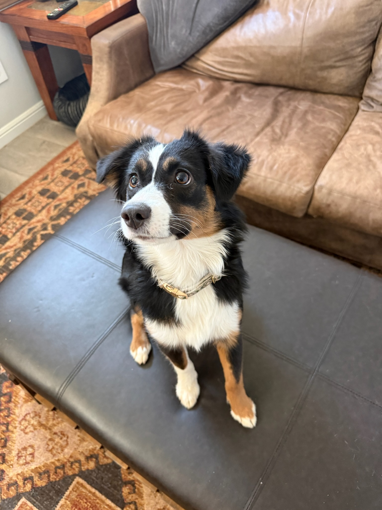

Leash Etiquette: Why It Matters More Than You Think
A dog that pulls, lunges, or wraps around your legs on a walk isn't just annoying—it's a safety hazard.
Read article →Midland / Odessa, Texas
Tips, insights, and expert advice from USA K9 Resorts—helping you build a better relationship with your dog.
A dog that pulls, lunges, or wraps around your legs on a walk isn't just annoying—it's a safety hazard.
Read article →
What the program involves, who it works best for, and what to expect.
Read article →
The first 16 weeks of a puppy's life shape how they respond to the world.
Read article →
A few practical steps can make a first stay easier for dogs and owners alike.
Read article →Questions about boarding or training?
We serve the Permian Basin, including Midland, Odessa, and surrounding communities.
832.381.8150